Module 7
Launching and Connecting
Sections of this module:
IntroductionCreate a ssh key
Launching an instance
Connect to the instance
Configuration and control
Connect to a remote desktop
Graphical Interfaces on the ssh terminal
Install a web server
Managing storage
On-instance storage
Object storage
Volume storage
Copying files across
Summary
Appendix
View all sections on one page (Printer friendly)
Object storage
You can connect to your object store with a variety of clients, as long as they support OpenStack Swift or Amazon S3. We will discuss some example clients which support Swift in this section.

Security Warning
Swift does NOT provide encryption of the data it stores.
If you have sensitive data that requires encryption you must encrypt the data files before upload them to your object store.
Access to your object store requires your password, but this password may be saved in a file that people who have access to your local computer can read. You must be careful to not give anyone access to your computer — similarly, they would get access to your private ssh key that you save on your computer to log in to your instance, so be careful with giving people access to your computer.

The NeCTAR implementation of Swift is geodistributed across Nodes of the Research Cloud so that availability is not reliant on any one datacentre or network infrastructure. Each collection of Swift nodes/hardware is known as a region, which may or may not include a Swift proxy server (the Internet facing and serving component of Swift). With some Swift clients/APIs users can explicitly choose which proxy to connect to, this might be useful e.g. for speeding up writes to object storage by choosing the nearest proxy. Due to NeCTARs Swift having multiple regions, some clients/APIs require explicit configuration of a default region, which should be “Melbourne” for most users (see e.g. the Cyberduck profile below).
Get your OpenStack credentials
Before you start, you should get your login details. Note that you will not need to do this if you just want to upload files via the Dashboard (as described in the next section). But if you want to use other tools, and to complete this tutorial, you should take note of your credentials now.
You can download your credentials from the Dashboard
-
Your tenant ID is the name of your project as reported in the left hand panel of the dashboard (e.g. pt-12345)
-
Your username is reported at the top of the dashboard on the right (e.g, logged in as: user@uni.edu.au)
-
Open the Dashboard API tab: get there via Compute > Access & Security > API Access.
-
Look up what is specified for the ‘Identity’ Service in the Dashboard API tab. It will be a URL like
https://keystone.rc.nectar.org.au:5000/v2.0/
Take note of the text between https:// and the colon (keystone.rc.nectar.org.au in the example). This will be the Server. Take note of the number (5000 in the example). This will be the Port. You will need the Keystone Server and Port to authenticate your access. Also take note of the keystone version which you are using, in this case its v2.0. -
Get your credential file (this is called the OpenStack RC file for OpenStack, and EC2 file for Amazon). You can download by clicking on the buttons on the top right on the same window: Download OpenStack RC File. Download it and save it somewhere on your computer where you can easily find it later.
-
You will also need your OpenStack password. This is not the same password that you use to log in to the Dashboard! If you have never used the OpenStack password before, you need to generate it first. You can do this in the Settings of the Dashboard: click next to your user name (your e-mail) on the top right and a drop down menu will open. Click on Settings. You need to reset your password by clicking Reset Password on the left panel of the settings. A long combination of numbers and letters will be displayed. This is your OpenStack password. Copy the text and save it somewhere safe.
Your OpenStack password will be a long combination of numbers. At the time of writing, unfortunately this password cannot be changed yet, but this should be changed in a future update of OpenStack on NeCTAR.
You will not need your OpenStack RC file in this Module, but you will need it later in Module 10. So while you are on the Dashboard API page already, you may download it now, and remember for later where you put it.
All platforms: Access via the Dashboard
We will upload some files to our Object Store using the Dashboard. This is probably the easiest method to upload files.
First, select any file on your computer — some image, text file, or anything not so important. If you are unsure which to choose, just create a new text file, write something in it, and save it to the Desktop (or anywhere else where you can find it.
In this example, we are using a file called SampleObject.txt with the text “I am a sample object file” in it, saved on the Desktop.
Step 1: Create a container
Go to the Dashboard and then to Object Store > Containers. You will get to a page which shows the overview of your containers.
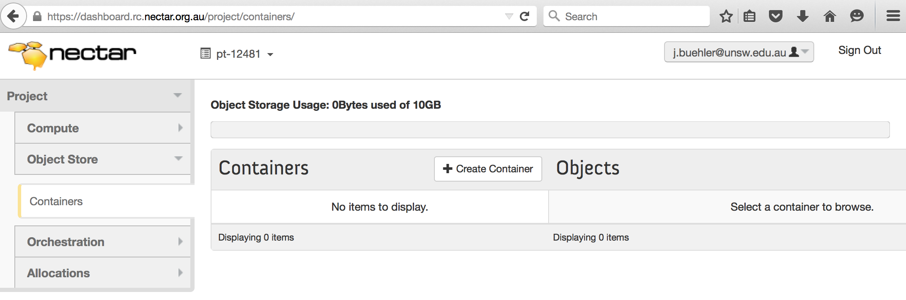
First of all, you will have to create a Container.

A Container is like a folder in which you can put files. The difference to a normal folder is that a Container is intended for a flat hierarchy, so you cannot create containers within a container — however you may create “Pseudo Containers” within the Container, so you can still organize your files hierarchically.
Click on Create Container. As a Name, type in MyObjectContainer (or you may use your own container name, in which case you have to consider this in the instructions below). Keep the access on private.
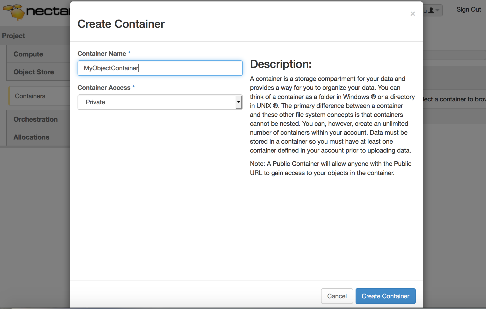
Click on Create Container. Your Container MyObjectContainer will then be listed on your Dashboard:
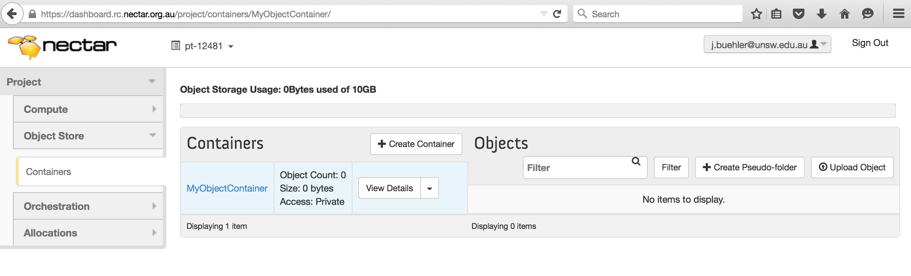
Step 2: Upload a file
Click on Upload Object on the right side of your container overview. A window will open in which you can Browse for your file.
Note: If you cannot see the “Upload Object” field, you have to click on your container MyObjectContainer to select it.
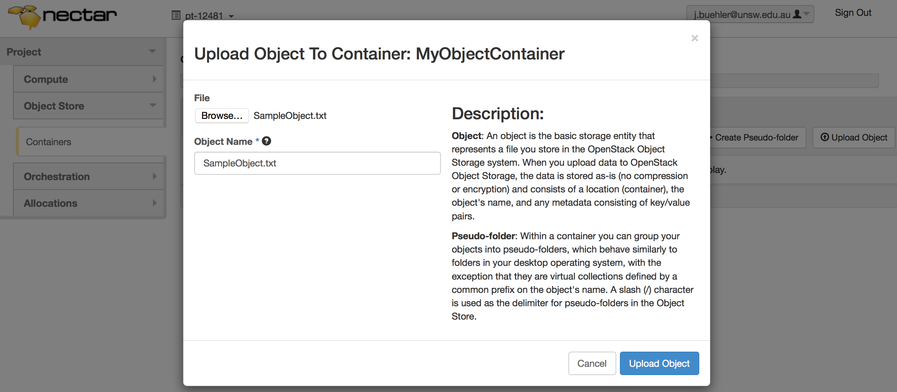
You may also rename it in the given text field if you wish, for now we are going to keep the name SampleObject.txt.
Click Upload Object to close the window and upload the file to your object store. It will now be displayed on the right side of the overview. We can see that it has 27 Bytes.
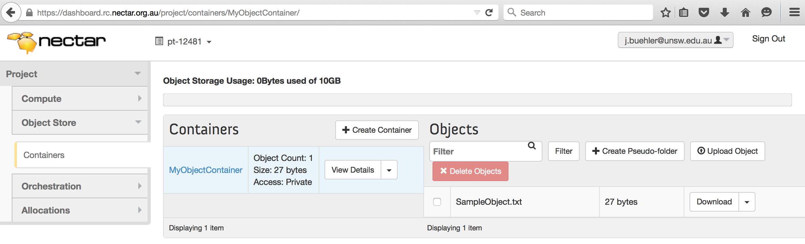
If you wanted to download this file (e.g. when accessing the store from another computer), you can do this here by clicking on Download.
Windows/Mac: Access with Cyberduck
-
Download the newest version possible of the application Cyberduck (you need at least version 4.4): http://cyberduck.ch/
- Install Cyberduck.
- On a Mac, you will download a .zip file which contains the app. Save it to the Desktop (or any other folder). Extract the zip file by double-clicking on it.
- On Windows, you will download an installer. You may keep the default options, if unsure. You don’t need to install Bonjour, if you are asked.
- Create a text file on your local computer (e.g. save it on the Desktop) with the following contents. Name it NeCTARObjectStore.cyberduckprofile (or any other name, it just has to end with .cyberduckprofile).
<?xml version="1.0" encoding="UTF-8"?> <!DOCTYPE plist PUBLIC "-//Apple//DTD PLIST 1.0//EN" "http://www.apple.com/DTDs/PropertyList-1.0.dtd"> <plist version="1.0"> <dict> <key>Protocol</key> <string>swift</string> <key>Vendor</key> <string>NeCTAR Swift (Keystone)</string> <key>Context</key> <string>/v2.0/tokens</string> <key>Region</key> <string>Melbourne</string> <key>Description</key> <string>NeCTAR Swift Melbourne (Keystone)</string> <key>Scheme</key> <string>https</string> <key>Default Hostname</key> <string>keystone.rc.nectar.org.au</string> <key>Default Port</key> <string>5000</string> <key>Hostname Configurable</key> <true/> <key>Port Configurable</key> <true/> <key>Username Placeholder</key> <string>tenantId:username</string> <key>Password Placeholder</key> <string>password</string> </dict> </plist> -
Double-click on your file NeCTARObjectStore.cyberduckprofile.
-
A Dialogue should open where you can specify Server etc. If it does not, open Cyberduck and go to Bookmarks > New Bookmark.
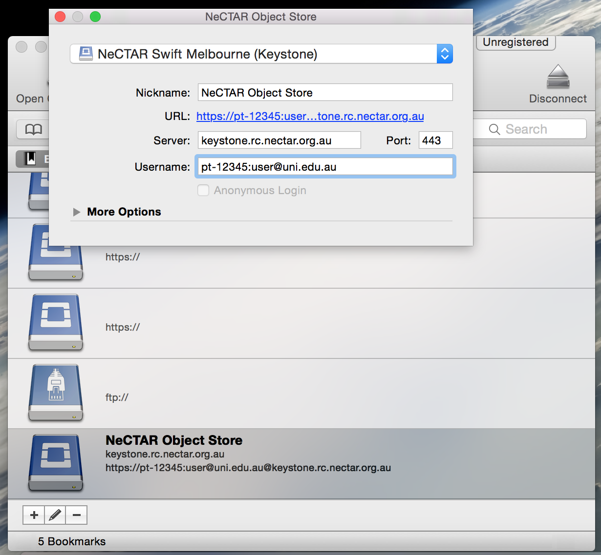 -
Choose NeCTAR Swift Melbourne (Keystone) from the drop-down box, if it is not selected yet. If it does not exist, something has gone wrong in importing the NeCTAR profile (your file NeCTARObjectSTore.cyberduckprofile). The image shows how it looks on a Mac, on Windows your interface will look a bit different, but the fields are the same.
-
Nickname: give the connection a name of your choice, e.g. ‘NeCTAR Object Store’
-
Confirm that Server and Port match the OpenStack credentials you took note of. If they don’t match use the values you took note of.
-
TenantID:Access ID (or username on a Mac): Type in your tenant ID and username (you took note of this before) separated by a colon, for example pt-12345:user@uni.edu.au.
-
Expand the window 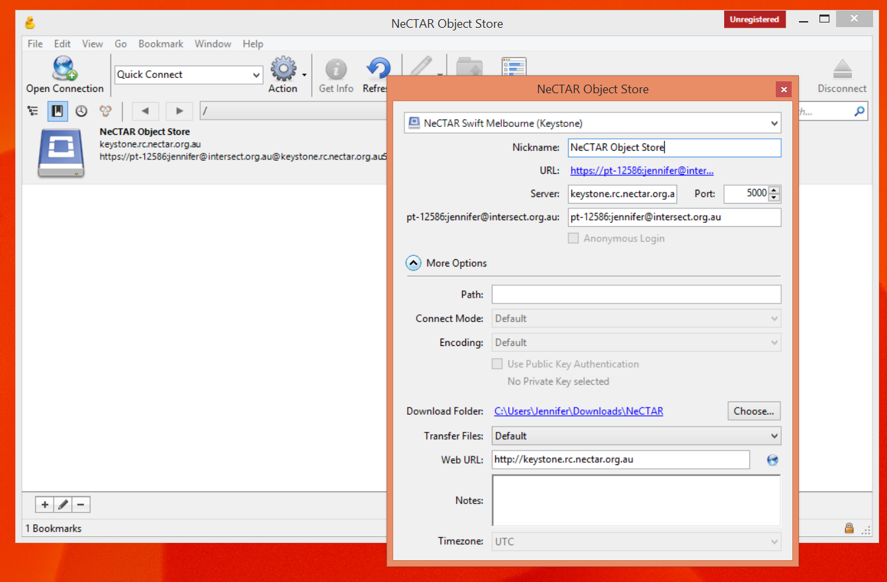 by clicking on More Options. You can choose a Download Folder to which your files will be downloaded by default. As Path you can (but do not have to) specify the version number of keystone, e.g. /v2.0/.
-
Leave all other options in the default setting, and close the window (by clicking on the window cross)
-
Double click on the symbol of your connection and Cyberduck will try to connect to your object store.
You will be asked to type your OpenStack password (not the password you use to login to the Dashboard!) This is the password in the OpenStack credentials you took note of. You might also be required to re-enter your tenant ID and username, again separated by a colon 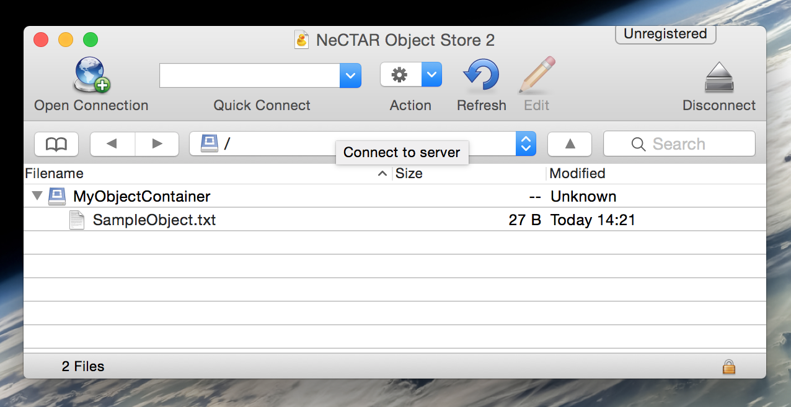 -
You can now drag and drop files into your object store container (drag in on the folder symbol), and from the object store container to your local computer (onto your desktop or into an open folder in your file explorer). You can also right-click and Download (it will download into the folder you selected as Download Folder in the connection dialogue).
- You can synchronize files to a folder on your local computer. Right-click on the container you want to synchronize, and select Synchronize. You will be prompted to select a folder to synchronize into.
Attention! Do not select the same folder which you have specified as Download Folder in the connection dialogue! This will create duplicate and nested directories.
Select your folder, and it will start to synchronize your files. You can then access your object store files in this folder, edit them from there, synchronize with Cyberduck again (you have to select the same folder again), and your Object Store will be up-to-date!
- You can edit files directly by right-clicking on them and select “Edit”. Then you may choose a program to edit it with.
Resources
Windows only: Access with Cloudberry
-
If you do not already have CloudBerry Explorer then download and install it on your computer from the official website.
-
Open CloudBerry Explorer
-
Click File > OpenStack > New Account. Then, click Add.
-
Display name: use a meaningful name to this account (e.g., the name you supplied as your container in the step above)
-
User name: your username, which is your e-mail (e.g., user@uni.edu.au)
-
API key: your OpenStack password
-
Authentication Service: This is the server, port and version of keystone that you took note of with your credentials, e.g. https://keystone.rc.nectar.org.au:5000/v2.0
-
Tick Use Keystone authentication
-
Select the Tenant name option from the drop-down menu and insert your tenant ID (e.g., pt-12345)
-
Close the Window with ‘OK’, and close the next Window with “Close”.
-
On the right window, select your display name from the drop down box. CloudBerry will connect to your object store. On the left window, you see your files of your local computer.
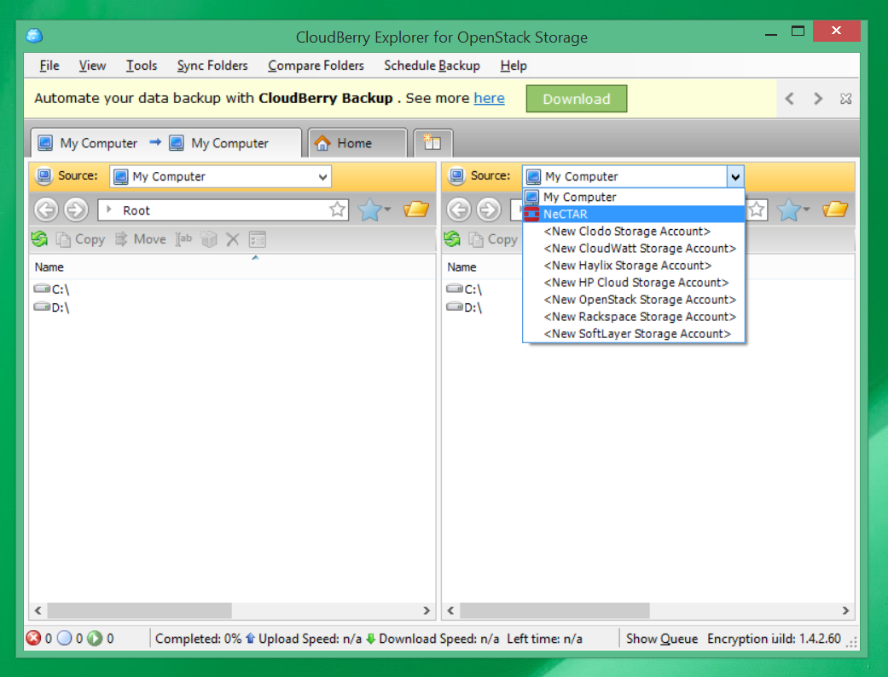 -
You can drag and drop files between both windows.
-
You can directly edit a file by Right click > Open.
Linux and Mac OS X: Using any FTP client
Prerequisite: You should know how to use an FTP client.
You can use any FTP client, for example Filezilla. For this, we will have to run a program that acts like a FTP server on our own local machine. This FTP server will then communicate with the SWIFT object storage on our cloud and provide the file exchange via the FTP service.
The following instructions are for a Debian based distribution, e.g. Ubuntu. For more information, refer to the official project page.
Open a Terminal on your local computer to type in the following commands.
- Install the ftp server package
Linux
sudo apt-get install ftp-cloudfs
or use your other package manager if you are on another distribution than ubuntu.
Mac OS X- Install python’s pip (unless you already have it) using the homebrew package manager:
brew install python
Alternative: If you don’t have homebrew, you may use the easy_install command, however there may be problems with running the ftp-cloudfs command with this. You may try anyway, and if it does not work, then uninstall pip again (sudo pip uninstall python-swiftclient) and get homebrew instead.
sudo easy_install pip - Upgrade setuptools
sudo pip install --upgrade setuptools - Install python-swiftclient
sudo pip install python-swiftclient
sudo pip install python-keystoneclient - Install ftp-cloudfs
pip install ftp-cloudfs
- Install python’s pip (unless you already have it) using the homebrew package manager:
-
Start the local FTP server
ftpcloudfs --foreground --keystone-auth --auth-url https://keystone.rc.nectar.org.au:5000/v2.0 --keystone-tenant-separator=: & - Start your favourite FTP client, for example FileZilla. If you don’t have FileZilla, you can install it with
sudo apt-get install filezilla
Your login details for the FTP client are as follows:- Server (or Host): 127.0.0.1
This IP address is the one of your local computer (not an IP address you can use to access your computer from outside though) — Remember, you are connecting to the FTP server we just launched on our local machine. - User: <tenant>:<username>
Replace <tenant> and <username> with your OpenStack credentials. - Password: Your OpenStack password
- Port: 2021
- Server (or Host): 127.0.0.1
- You can now browse your files and drag and drop them between both windows, as you are used to when using the FTP client. On the left side, you can see the file system of your local computer, and on the right side, you can see your object store.
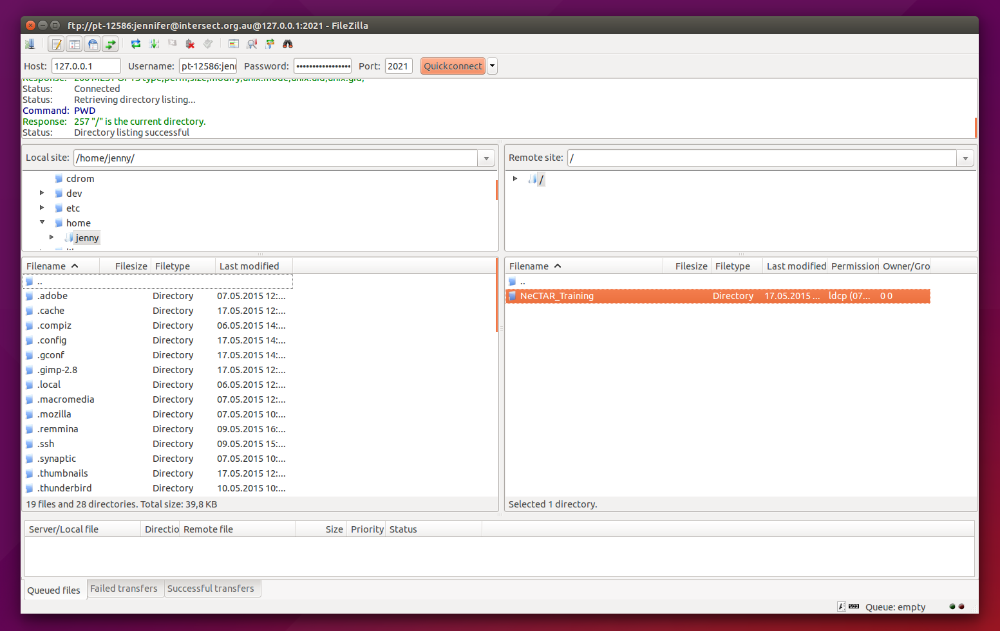
You will have to do steps 2 and 3 every time you restart your local computer.
Linux [Advanced]: Access with CloudFuse
CloudFuse is a lightweight open source application that may be installed on Linux servers to create a local mount point to a customers existing Cloud Files container.
You can find more information and documentation about cloudfuse on the cloudfuse github page
To set up cloudfuse for access to your object store, launch a terminal on your local computer and follow the steps below.
-
Install necessary packages
sudo apt-get install build-essential libcurl4-openssl-dev libxml2-dev libssl-dev libfuse-dev git -
Clone the CloudFuse source
cd
git clone git://github.com/redbo/cloudfuse -
Compile the source code and install it
cd cloudfuse
./configure
make
sudo make install
modprobe fuse -
Create a file called $HOME/.cloudfuse
sudo nano $HOME/.cloudfuse - Put the following contents into your file (replace <your-tenant-name>, <your-username> and <your-password> with your own credentials):
authurl=https://keystone.rc.nectar.org.au:5000/v2.0/ tenant=
username= api_key= cache_timeout=60 -
Set the right permissions:
chmod 600 $HOME/.cloudfuse -
Mount your Swift storage with the following commands
sudo mkdir /mnt/cloudfiles/
cloudfuse /mnt/cloudfiles/
Of course you may choose another name instead of cloudfiles, and/or create the directory somewhere else. -
You should now be able to access your files on the directory /mnt/cloudfiles just as if they were on your local computer.
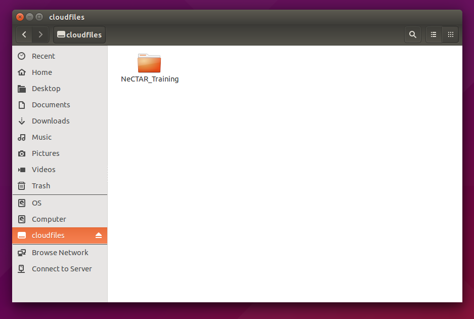ls -l /mnt/cloudfiles/
Or open your file explorer to find your mounted drive there (see image to the right). You may even drag and drop files to and from your object storage, as if it was a regular hard drive or folder on your computer. - Every time you restart your computer, you will have to re-connect the object store with the command:
cloudfuse /mnt/cloudfiles/
Troubleshooting:
Your username (of your local computer) may need to be part of the fuse user group. This can be accomplished with the following command in your computer’s terminal:
sudo usermod -a -G fuse <username>
All platforms: Access with the openstack command
You may also use the openstack command to list the files in our object storage that we just created. This will be discussed in Module 10.
Access via APIs
We will discuss more options on how to connect to the object store in Module 10.

 This work is licensed under a
This work is licensed under a